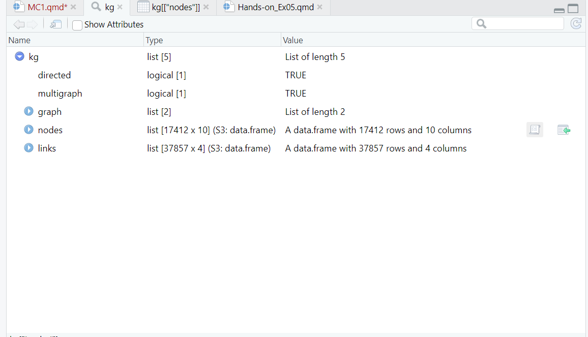

You are required to install the R packages above, if necessary, before continue to the next step
Check packages to ensure they are installed
Code
pacman::p_load(tidyverse, jsonlite, SmartEDA, tidygraph, ggraph)#tidygraph to build graph object, to work tgt with ggraph#ggplot no need to call out again as its in tidyverse#SmartEDA library for exploratory data analysis, good to have it to check data
Importing Knowledge Graph Data
Code
kg <-fromJSON("data/MC1_graph.json")
Inspect Structure
Code
str(kg,max.level =1)
List of 5
$ directed : logi TRUE
$ multigraph: logi TRUE
$ graph :List of 2
$ nodes :'data.frame': 17412 obs. of 10 variables:
$ links :'data.frame': 37857 obs. of 4 variables:
Code
#structure enable to check structure of the data#good to have this line to check structues of data
Note
directed - tells you if its a directed graph
nodes and links are in dataframe- can be read
Can see data types etc from Environment tab of R-studio - look at the structure
Can open and see the data table

Extract and Inspect
Code
nodes_tbl <-as_tibble(kg$nodes) #kg$ know that pull nodes outedges_tbl <-as_tibble(kg$links)
avoid multiple id that have 0 0 but actually they have missing value
to make sure they have unique id code
To reassign ID
depends on scenario, may need to subset data first before extracting - depends on use case
Code
id_map <-tibble(id = nodes_tbl$id, index =seq_len(nrow(nodes_tbl)))
Step 2: Map source and target IDs to row indices
Code
edges_tbl <- edges_tbl %>%left_join(id_map,by =c("source"="id"))%>%rename(from =index) %>%left_join(id_map, by =c("target"="id"))%>%rename(to = index)## see data table original source is 0 now become from 1
graph <-tbl_graph(nodes = nodes_tbl,edges = edges_tbl,directed = kg$directed)#if its directed, true, if not false. BUt in this case there is data to show its directed = true so can reference the data from the data
Visualising the knowledge graph
Code
set.seed(1234)#once fix this, everytime run random is the same number
graph_memberof <- graph %>%activate(edges) %>%filter (`Edge Type`=="MemberOf")##filter off the edges but the nodes are still there, still a large set of data 17412 as the source
Step 2: Extract only connected nodes (ie used in these edges)
Code
##additional code to remove and only used connected nodes, those that are usefulused_nodes_indices <- graph_memberof %>%activate(edges)%>%as_tibble() %>%select(from, to) %>%unlist() %>%unique()
---title: "MC1"date: "May 14, 2025"date-modified: "last-modified"author: "Ng Jin Yao"format: html: code-fold: true code-tools: trueexecute: eval: true echo: true warning: false freeze: true---::: callout-important## ImportantYou are required to install the R packages above, if necessary, before continue to the next step\Check packages to ensure they are installed:::```{r}pacman::p_load(tidyverse, jsonlite, SmartEDA, tidygraph, ggraph)#tidygraph to build graph object, to work tgt with ggraph#ggplot no need to call out again as its in tidyverse#SmartEDA library for exploratory data analysis, good to have it to check data```## Importing Knowledge Graph Data```{r}kg <-fromJSON("data/MC1_graph.json")```### Inspect Structure```{r}str(kg,max.level =1)#structure enable to check structure of the data#good to have this line to check structues of data```::: callout-notedirected - tells you if its a directed graphnodes and links are in dataframe- can be readCan see data types etc from Environment tab of R-studio - look at the structureCan open and see the data table:::### Extract and Inspect```{r}nodes_tbl <-as_tibble(kg$nodes) #kg$ know that pull nodes outedges_tbl <-as_tibble(kg$links)```## Initial EDA```{r}ggplot(data = edges_tbl,aes(y=`Edge Type`)) +geom_bar()##want to know how many classes available for edge type## field names always use ``, not ''``````{r}ggplot ```## Creating Knowledge GraphThis is### Step 1: Mappying from node id to row indexavoid multiple id that have 0 0 but actually they have missing valueto make sure they have unique id codeTo reassign IDdepends on scenario, may need to subset data first before extracting - depends on use case```{r}id_map <-tibble(id = nodes_tbl$id, index =seq_len(nrow(nodes_tbl)))```### Step 2: Map source and target IDs to row indices```{r}edges_tbl <- edges_tbl %>%left_join(id_map,by =c("source"="id"))%>%rename(from =index) %>%left_join(id_map, by =c("target"="id"))%>%rename(to = index)## see data table original source is 0 now become from 1```### Step 3: Filter out any unmatched (invalid) edges```{r}edges_tbl <- edges_tbl %>%filter(!is.na(from), !is.na(to))```### Step 4: Creating the graph```{r}graph <-tbl_graph(nodes = nodes_tbl,edges = edges_tbl,directed = kg$directed)#if its directed, true, if not false. BUt in this case there is data to show its directed = true so can reference the data from the data```## Visualising the knowledge graph```{r}set.seed(1234)#once fix this, everytime run random is the same number```### Visualising the Whole Graph```{r}#| eval: falseggraph(graph, layout ="fr") +geom_edge_link(alpha =0.3,colour ="gray") +geom_node_point(aes(color =`Node Type`),size =4) +geom_node_text(aes(label = name),repel =TRUE,size =2.5) +theme_void()```#### Step 1:Filter edges to only "Memberof"mining for those "Memberof"```{r}graph_memberof <- graph %>%activate(edges) %>%filter (`Edge Type`=="MemberOf")##filter off the edges but the nodes are still there, still a large set of data 17412 as the source```#### Step 2: Extract only connected nodes (ie used in these edges)```{r}##additional code to remove and only used connected nodes, those that are usefulused_nodes_indices <- graph_memberof %>%activate(edges)%>%as_tibble() %>%select(from, to) %>%unlist() %>%unique()```#### Step 3: keep only those node```{r}graph_memberof <- graph_memberof %>%activate(nodes) %>%mutate(row_id =row_number()) %>%filter(row_id %in% used_nodes_indices) %>%select(-row_id) # optional cleanup```#### plot the sub graph```{r}ggraph(graph_memberof,layout ="fr") +geom_edge_link(alpha=0.5,colour ="gray") +geom_node_point(aes(color =`Node Type`),size =1)+geom_node_text(aes(label = name),repel =TRUE,size=2.5)theme_void()```